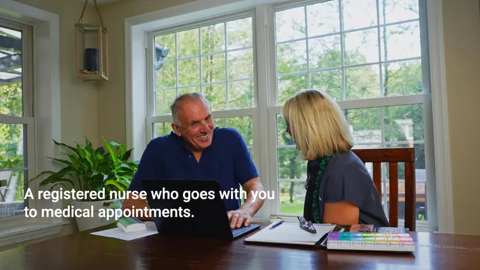

Why the Website Needed Its Own Artifacts
Take a Nurse is a patient-advocacy business founded by Kathy Fadgen, RN, BSN, MPH. She is a registered nurse who goes with clients to medical appointments. In August 2026 we built the brand identity: the logo system, the palette, the type, the stationery, and the guide that holds them together. That work is in the Take a Nurse case study.
Then the website came up. The new takeanurse.org is in build for a mid-October launch, and a site needs pictures. Not pictures of a nurse in general. Pictures of this nurse, with a client, doing the thing the business does. The site design also bans text over busy images, so the hero and any frame that carries a headline had to be shot with that in mind. Stock could not do any of it. So we planned a brand film and a photo library as the next workstream.
The Brief, in Five Rules
The client sent references. We turned them into five rules and put them at the top of the shot list:
- Warm, not clinical. Lamp light and window light. A kitchen table, a front door, a living room
- The patient is in charge. Never frail, never handled. The client leads the conversation. The nurse listens, explains, and walks beside them
- Clean frames with headline room. The site design bans text over busy images, so every wide shot needed quiet space for a headline to sit in
- Uniform and unfussy. One look for the nurse on every page, and nothing fussy in the frame
- Connection is the product. If a frame did not show two people paying attention to each other, we did not need it

Planning One Four-Hour Day
We had one window: Wednesday, September 16, 2026, 10:00 to 2:00, at the founder’s home. A crew of two, Mike producing and Jason on photo and video. Four hours is not much, so the planning did the work:
- Every shot mapped to a page. Before the day, each shot in the brief had a home on the new site: home, for families, for patients, about, how it works, services, contact, careers, or blog
- A run of show. Six scenes in a fixed order, from the kitchen table to the green screen, so everyone in the house knew what came next
- A one-page guide for the client. The hour-by-hour plan, the wardrobe, what to have ready, and the six scenes in plain language. It also carried one line we meant: you don’t have to perform
- Wardrobe, planned. The founder in cream so she reads apart from the clients in navy and light blue. No logos, no patterns, and no green, with a green screen waiting in the last scene
- Releases before the first frame. The founder and the mock patients playing the clients signed model releases, and a property release covered the home, before we shot anything
The Six Scenes
The founder played herself. The clients were mock patients, so below they are clients. Here is the day in run-of-show order.
A. The Conversation at the Kitchen Table
The patient leads. The printed “Questions to Ask at Your Appointment” sheet is on the table, a virtual visit runs on the laptop, and the scene ends with the after-visit summary handed across. Four beats in one room, and the plainest picture of the service: a nurse making sure a client understands what was said.
{kind=link}
B. The Arrival at the Front Door
The nurse arrives and the clients meet her at the door. The dog got into the frame and stayed in the edit. It reads as what it is: someone the household is glad to see.
{kind=link}
C. The Drive
The walk to the SUV, the prep talk in the car, and the departure. The part of the service nobody outside the car sees.
D. Founder Portraits
Four setups in one block: an editorial portrait, a clean headshot, the founder at ease with a coffee, and a careers portrait. Same face, four jobs.
{kind=link}
E. The Phone Call and the Inserts
The call is the first beat of the film, so it got its own setup in the living room. Then the details: hands, notes, the pill organizer, the grip of a cane. Inserts let a 60-second cut breathe, and they are cheap to shoot once the room is lit.
{kind=link}
{kind=link}
F. Green-Screen Clinical Plates
The last block was the founder in scrubs against green. The one scene that looks like nothing on its own, and the reason the site can show a clinic we never visited.
The Green-Screen Decision
The site needed the nurse in a clinical setting. Renting a facility was out of budget. So we shot the founder in scrubs against a green screen at the end of the day, so clinical settings can be composited in post. One setup gave the site its clinical frames without a location fee, and kept the whole day in one home.
What the Client Walked Away With
The brief called for 15 to 20 edited selects, flagged by shot number so each one could be matched to the page it was shot for. The retouching went further. In the end 1,008 retouched photos were delivered, every shot mapped to a page of the new site, so the web build pulls from a library instead of a folder.
The 60-second founder film was cut from a six-beat sheet: the call, the arrival, the conversation, the drive, understanding, and the close. Every line in it is the founder’s, captioned, and it closes on a “Patient First” end card. The 30-second loop for the website hero comes from the same day with no text at all, so the site’s own headline can sit over it.
“When someone calls me for the first time, I pause and I hear them out.”
“Having someone by their side to ensure they’re not just a patient in the bed.”
Key Takeaways
- Map every shot to a page before the day. A shot list is a wish list until each line has a place to go. The page map is what made four hours enough
- Write the client one page. Hour by hour, what to wear, what to have ready, and the scenes in plain language. It answers the questions before the crew arrives
- Sign releases before the first frame. Model releases for everyone on camera and a property release for the home. It takes minutes, and it is the difference between a library the client can use anywhere and one they cannot
- Plan wardrobe against the palette. Ours called for cream on the founder, navy and light blue on the clients, and no logos, patterns or green. Write it into the client’s guide so it is settled before the day
- Let the founder say it. A six-beat sheet, not a script. The film is her own words, captioned, and it is better for it
- Green screen beats a location you cannot afford. One setup at the end of the day gave the site its clinical frames without a facility
Frequently Asked Questions
How long does a brand shoot for a small business website take?
For Take a Nurse, one four-hour window covered six scenes, a founder film, and a full photo library with a crew of two. The planning took longer than the shoot: the shot list, the page map, the run of show, the wardrobe plan, and the client’s one-page guide were all done before the day.
Does a small business need a studio or a rented location for a brand shoot?
Not always. We shot Take a Nurse at the founder’s home under a property release, and used a green screen for the clinical plates so clinical settings could be composited in post instead of renting a facility.
What should a founder film say?
What the founder says to a client. The Take a Nurse film is 60 seconds, cut from six beats in the founder’s own words, captioned, and it closes on a “Patient First” end card. A 30-second text-free loop from the same shoot was cut for the website hero.
Building a website that needs its own film and photo library? We plan the day so one day is enough.
View Take a Nurse Case Study Content Development